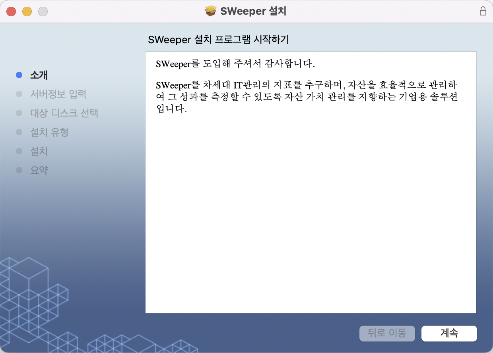
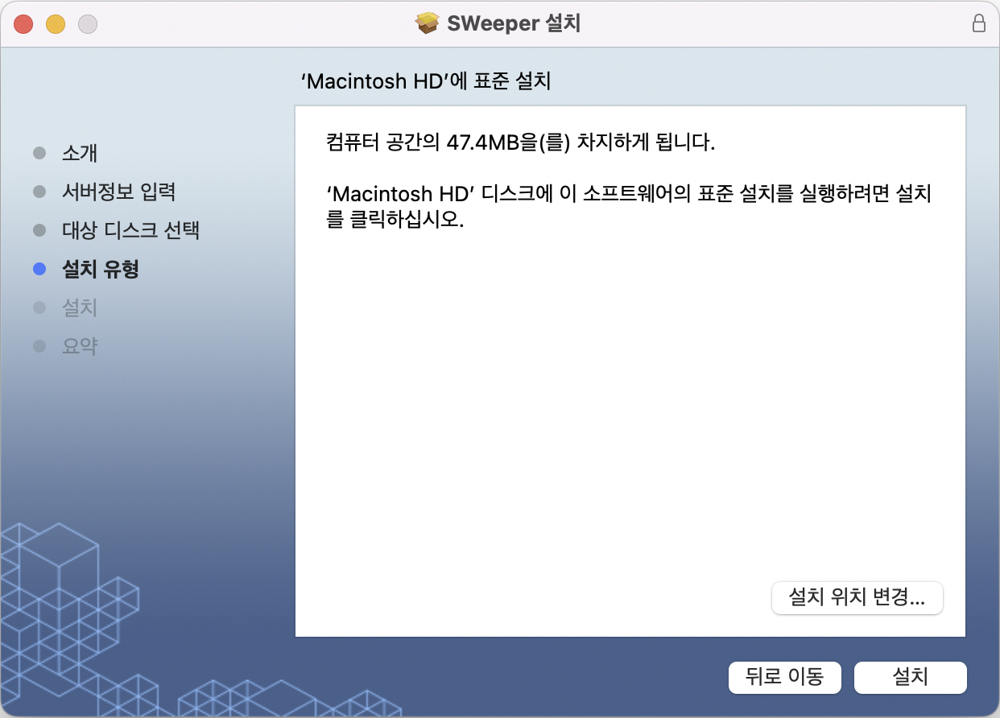
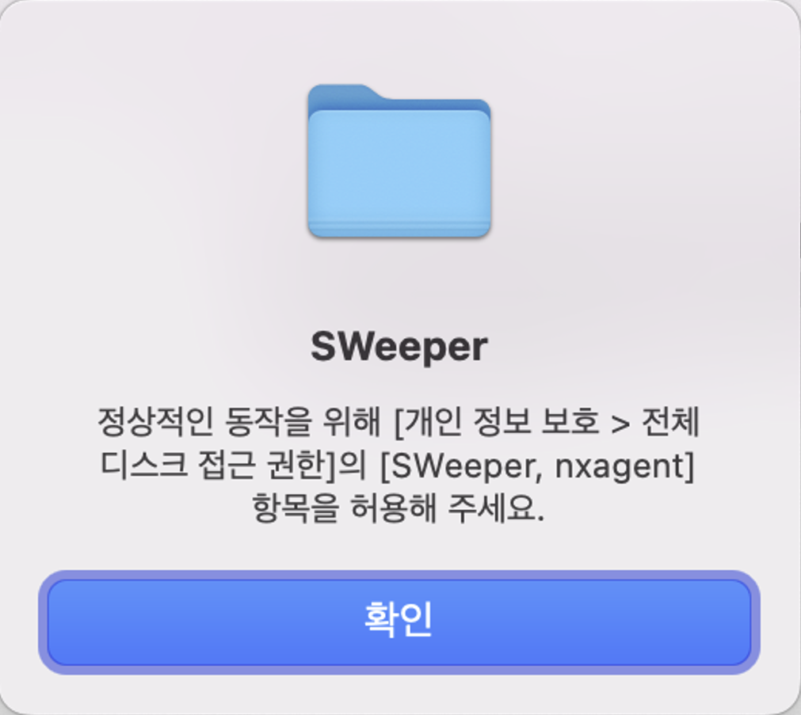
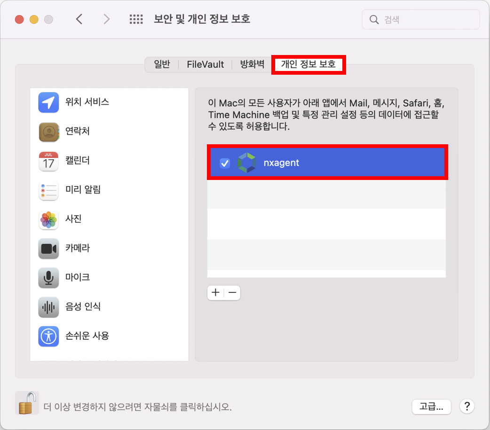

11.2.2. Mac Agent 설치
11.2.2. Mac Agent 설치
Source: https://www.sweeper.or.kr/etc/manual/1122MacAgent.html
11.2.2. Mac Agent 설치
11. CLIENT UI(AGENT) ›› 11.2. Agent 설치 및 제거 ››


설치
- 프로그램 실행

-
소개
-
설치 프로그램에서 계속을 선택합니다.
 -
서버정보
-
명령서버 정보를 입력합니다.

-
설치유형
-
설치에 필요한 정보를 확인하고 설치를 선택합니다.
 -
설치암호
-
관리자 암호를 입력합니다.

-
설정 업데이트 암호
-
관리자 암호를 입력합니다.

-
권한허용
-
보안 및 개인정보 보호의 개인 정보 보호 탭 하단의 "SWeeper"와 "nxagent" 선택합니다.


-
설치진행 및 종료
-
설치가 종료되었습니다.

© Copyright SWeeper Inc.. All Rights Reserved